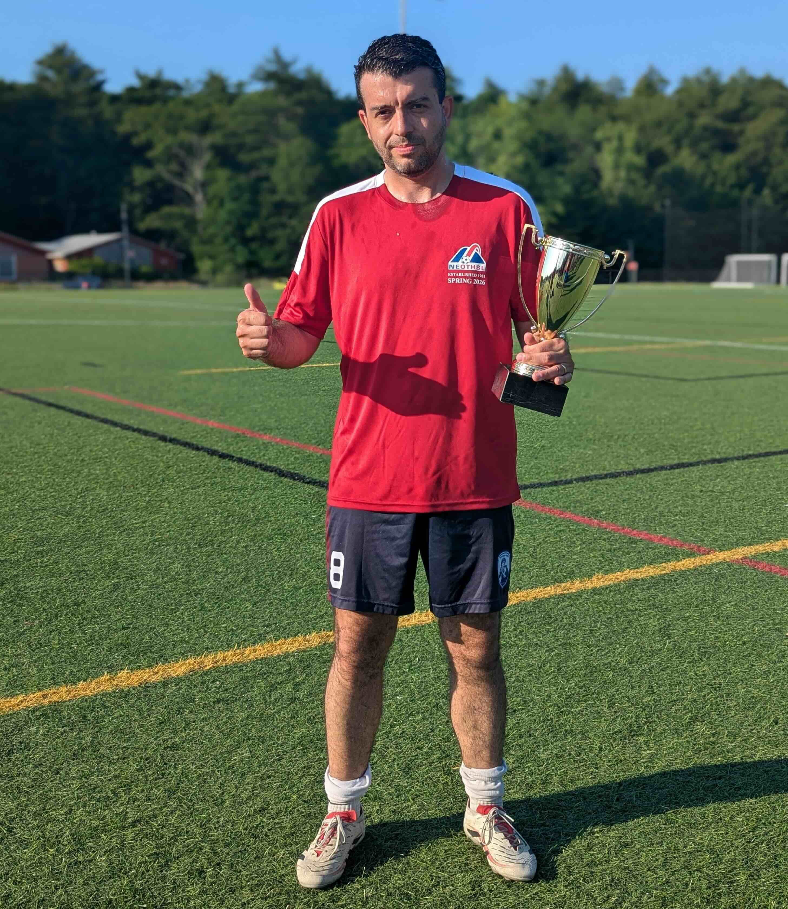
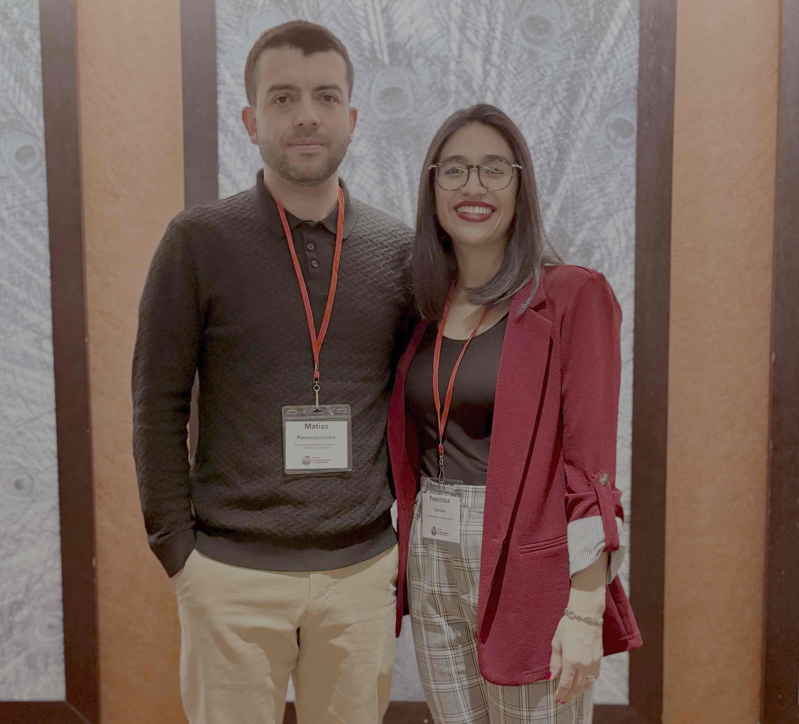
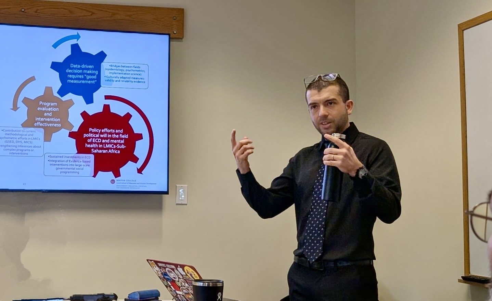
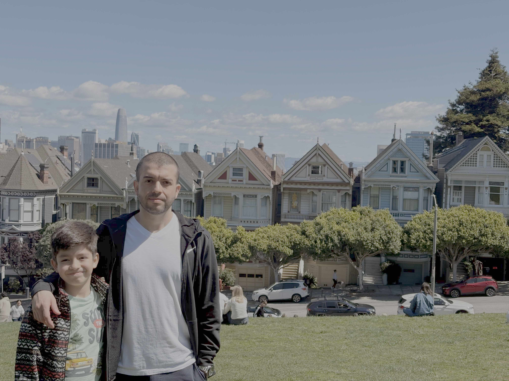
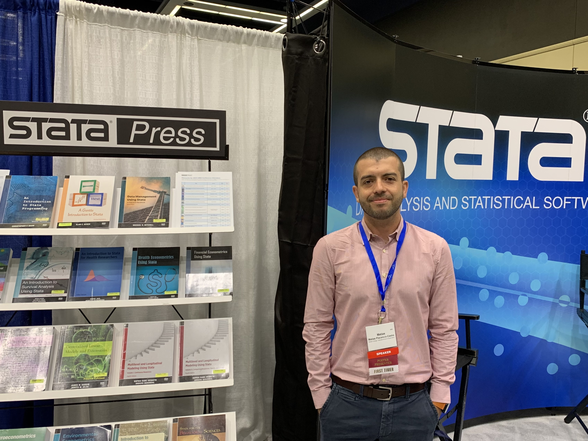

Bio
Hi! I'm Matias, an educator, researcher, and data scientist with more than ten years of experience in global health, education, and social policy. These days I work as a Senior Research Specialist at IEA's TIMMS and PIRLS International Study Center at Boston College. I help develop assessments and context questionnaires, contribute to research publications, and help keep project schedules on track for the TIMSS and PIRLS assessment cycles.
My main motivation has always been using data to, hopefully, make a real difference, especially for vulnerable communities in low-resource and post-conflict settings. Scientific rigor and reproducibility matter a lot to me, and so does making sure research actually reaches the people shaping policy and practice. And Over the years, I have been lucky to contribute to projects in Rwanda, Sierra Leone, Chile, and the United States.
A bit about me and the family)

I'm lucky to say that my family is the most exciting part of my life (I mean it. It's not only for the media!). We spend a lot of time together, love doing outdoor stuff, but also love staying in bed a bit late during the weekends. Every friday we try to have a nice dinner and watch a movie together. We have the Starwars Saga (and spin-offs) SEVERAL times!
My 11-year-old son is super kind and a lot of fun. He also plays soccer, loves music, and plays guitar. Soon he'll probably be better at it than I am! One of our favorite things to do together is play Pokémon cards. My wife is a force of nature, and she's been brave enough to put up with me for almost 10 years now. She's also a researcher, but we haven't coauthored a paper yet. Stay tuned for when that happens!.
Education
I earned my Ph.D. in Measurement, Evaluation, Statistics, and Assessment from the Lynch School of Education and Human Development at Boston College. For my dissertation, I worked with data frm low-income rural communities in Rwanda. I validated instruments for measuring mental health and early psychosocial stimulation, and I explored the mechanistic relationships between caregiver mental health, nurturing care practices, and child development. Before that, I studied at the Pontifical Catholic University of Chile, where I earned a Master's in Sociology, a Bachelor's in History, and a High School Teaching Degree. My academic background brings together social science, education, global health, and quantitative methods. Along the way I have gained a lot of hands-on training in experimental designs, program evaluation, and advanced statistical modeling, including hybrid trials that test both whether a psychosocial intervention works and how it's delivered.
My work in Chile

Adventures in the United States
After moving to the US for my doctoral studies, much of my time has been with the Research Program on Children and Adversity (RPCA) at Boston College, where I grew from Research Assistant to Senior Social Sciences Research Data Analyst. There I led advanced statistical modeling, helped write grants and design studies, and mentored students and early-career researchers in quantitative methods. I have the amazing opportunity of working on randomized controlled trials, longitudinal studies, and implementation-effectiveness hybrid trials in global mental health and early childhood development. One project I'm especially proud of is the large-scale rollout of an evidence-based parenting program in Rwanda (NCT02510313; NCT04257383; NCT05405400; NCT06941831). It has been supported by private philanthropies, the World Bank's Strategic Impact Evaluation Fund, and the National Institutes of Health, and it has reached more than 18,000 households and 30,000 caregivers and children in rural Rwanda. Before joining RPCA, I worked as Graduate Reserach Assistant for the Measurement, Evaluation, Statistics, and Assessment Department at the Boston College Lynch School of Education, and as a Graduate Statistical Analyst at Boston College's Academic Research Services. I've also collaborated with Boston University's Center for Psychiatric Rehabilitation on longitudinal evaluations and psychometric analyses for mental health and social support programs, and I interned at the Boston Public Schools Office of Data and Accountability, where I used statistical models to build equity indicators for the district's Opportunity Index.
My research interests

Last but not least, I'm not going to lie: teaching is one of my favorite parts of this work. I am, after all, a teacher by training and chose that for a reason I suppose. At Boston College, I've taught as part-time faculty in the School of Social Work and the Lynch School of Education, covering research methods, program evaluation, and intermediate statistics. In Chile, I taught applied statistics, psychometrics, and research design at Diego Portales University and the Pontifical Catholic University of Chile. And I have also led several workshops for universities and NGOs organizations on educational measurement, instrument development and validation, and psychometrics.

